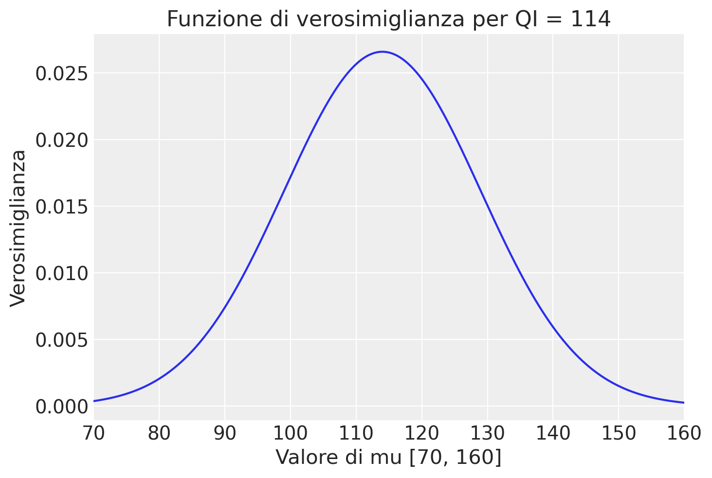

import numpy as np
import pandas as pd
import matplotlib.pyplot as plt
import seaborn as sns
import scipy.stats as stats
import math
from scipy.integrate import quad
import arviz as az
import seaborn as sns
from scipy.optimize import minimize32 La verosimiglianza
Prerequisiti
Concetti e Competenze Chiave
- Comprendere il concetto di verosimiglianza e il suo ruolo nella dei parametri.
- Generare grafici della funzione di verosimiglianza binomiale.
- Generare grafici della funzione di verosimiglianza del modello gaussiano.
- Interpretare i grafici della funzione di verosimiglianza.
- Comprendere il concetto di stima di massima verosimiglianza.
Preparazione del Notebook
seed: int = sum(map(ord, "likelihood"))
rng: np.random.Generator = np.random.default_rng(seed=seed)
sns.set_theme(palette="colorblind")
az.style.use("arviz-darkgrid")
%config InlineBackend.figure_format = "retina"Introduzione
Oltre agli approcci frequentisti e bayesiani, esiste un terzo metodo fondamentale nell’ambito dell’inferenza statistica: la metodologia basata sulla verosimiglianza. Questo approccio consente ai ricercatori di valutare l’evidenza relativa quando si confrontano due modelli o ipotesi, in maniera simile alla metodologia bayesiana. Ciò che lo distingue è il suo esplicito rifiuto di incorporare informazioni pregresse (priori) nelle analisi statistiche.
Questo capitolo si concentra sulla funzione di verosimiglianza, concetto centrale che si estende attraverso tutti e tre gli approcci statistici, fungendo da collegamento tra i dati osservati e i parametri di un modello statistico specifico. La rilevanza della funzione di verosimiglianza risiede nella sua capacità di fornire un fondamento robusto per l’interpretazione e la quantificazione dell’adeguatezza dei dati ai modelli teorici. Questo la rende uno strumento cruciale per l’inferenza statistica, indispensabile per comprendere e valutare la conformità dei dati rispetto alle teorie proposte.
32.1 Il Principio della Verosimiglianza e la sua Formalizzazione
La funzione di verosimiglianza e la funzione di densità (o massa) di probabilità sono due concetti fondamentali in statistica che, nonostante condividano la stessa espressione matematica, rivestono ruoli e interpretazioni distinti a seconda del contesto in cui vengono applicati. La chiave per distinguere tra i due concetti risiede nel modo in cui trattiamo i dati e i parametri del modello.
Nel caso della funzione di densità (o massa) di probabilità, i parametri del modello sono fissati e l’obiettivo è valutare la probabilità di osservare un certo insieme di dati. Qui, i dati sono variabili, mentre i parametri sono considerati costanti. Per esempio, in un esperimento in cui lanciamo una moneta diverse volte, potremmo usare una distribuzione binomiale per calcolare la probabilità di ottenere un certo numero di teste, assumendo un valore noto e fisso per la probabilità di ottenere testa in un singolo lancio.
Al contrario, nella funzione di verosimiglianza, manteniamo i dati osservati come fissi e variamo i parametri del modello per valutare quanto bene questi ultimi si adattino ai dati osservati. Questo processo ci permette di esplorare la plausibilità di diversi valori dei parametri dati gli stessi dati. L’obiettivo è identificare il set di parametri che meglio spiega i dati osservati.
Formalmente, la relazione tra la funzione di verosimiglianza e la funzione di densità di probabilità è espressa come segue:
\[ L(\theta | y) \propto p(y | \theta), \]
dove \(L(\theta | y)\) rappresenta la funzione di verosimiglianza per i parametri \(\theta\) dati gli osservazioni \(y\), e \(p(y | \theta)\) indica la probabilità (o densità) di osservare i dati \(y\) dato un certo set di parametri \(\theta\).
Prendiamo l’esempio del lancio di una moneta. Se osserviamo 7 teste su 10 lanci, la funzione di massa di probabilità della distribuzione binomiale ci permette di calcolare la probabilità di questo esito per un dato valore di \(p\) (la probabilità di testa). In questo contesto, \(p\) è fisso e i dati (\(y = 7\) teste in \(n = 10\) lanci) sono variabili.
Dall’altro lato, se consideriamo \(p\) variabile, la funzione di verosimiglianza ci permette di valutare come diversi valori di \(p\) si adattano all’esito osservato di 7 teste su 10 lanci, mantenendo i dati osservati fissi.
È importante sottolineare che, benché le due funzioni condividano la stessa forma matematica, il loro utilizzo e interpretazione sono profondamente diversi. La funzione di densità di probabilità si concentra sulla probabilità degli esiti dati i parametri, mentre la funzione di verosimiglianza valuta la plausibilità dei parametri dati gli esiti. Questa distinzione è cruciale per l’inferenza statistica, permettendoci di stimare i parametri del modello che meglio si adattano ai dati osservati e di comprendere in modo più approfondito la struttura e le caratteristiche del fenomeno studiato.
32.2 Verosimiglianza Binomiale
Proseguendo con l’esempio della distribuzione binomiale, approfondiamo la rilevanza della funzione di verosimiglianza nell’analisi statistica attraverso uno scenario pratico. Supponiamo di condurre un esperimento con un numero definito di prove \(n\), ognuna delle quali può terminare con un successo o un fallimento, come nel caso dei lanci di una moneta. Se registriamo \(y\) successi e \(n - y\) fallimenti, la probabilità di osservare esattamente \(y\) successi segue la funzione di massa di probabilità (FMP) binomiale, che è definita come:
\[ P(Y = y) = \binom{n}{y} \theta^y (1 - \theta)^{n - y}, \]
dove \(\theta\) è la probabilità di successo in una singola prova di Bernoulli.
Nell’utilizzo della funzione di verosimiglianza, ci concentriamo su come i diversi valori di \(\theta\) possono spiegare i dati osservati \(y\). La verosimiglianza è espressa come:
\[ \mathcal{L}(\theta \mid y) = \theta^y (1 - \theta)^{n - y}, \]
dato che il coefficiente binomiale \(\binom{n}{y}\), non dipendendo da \(\theta\), può essere omesso per la semplicità della formulazione.
Esempio 32.1 Per esemplificare, immaginiamo uno studio su un gruppo di 30 individui, di cui 23 presentano un atteggiamento negativo verso il futuro, un indicatore comune in pazienti con depressione (Zetsche, Buerkner, e Renneberg 2019). Qui, i nostri dati \(y\) e \(n\) sono fissi, e la funzione di verosimiglianza per \(\theta\) sconosciuto diventa:
\[ \mathcal{L}(\theta \mid y) = \frac{(23 + 7)!}{23!7!} \theta^{23} (1 - \theta)^7. \]
Valutando questa funzione per una serie di valori di \(\theta\) possiamo determinare quale valore di \(\theta\) rende i dati osservati più verosimili. Procediamo simulando 100 valori equidistanti di \(\theta\) nell’intervallo [0, 1] e calcoliamo la verosimiglianza per ciascuno di questi valori.
n = 30
y = 23Creiamo i possibili valori del parametro \(\theta\) per i quali calcoleremo la verosimiglianza.
theta = np.linspace(0.0, 1.0, num=100)
print(theta)[0. 0.01010101 0.02020202 0.03030303 0.04040404 0.05050505
0.06060606 0.07070707 0.08080808 0.09090909 0.1010101 0.11111111
0.12121212 0.13131313 0.14141414 0.15151515 0.16161616 0.17171717
0.18181818 0.19191919 0.2020202 0.21212121 0.22222222 0.23232323
0.24242424 0.25252525 0.26262626 0.27272727 0.28282828 0.29292929
0.3030303 0.31313131 0.32323232 0.33333333 0.34343434 0.35353535
0.36363636 0.37373737 0.38383838 0.39393939 0.4040404 0.41414141
0.42424242 0.43434343 0.44444444 0.45454545 0.46464646 0.47474747
0.48484848 0.49494949 0.50505051 0.51515152 0.52525253 0.53535354
0.54545455 0.55555556 0.56565657 0.57575758 0.58585859 0.5959596
0.60606061 0.61616162 0.62626263 0.63636364 0.64646465 0.65656566
0.66666667 0.67676768 0.68686869 0.6969697 0.70707071 0.71717172
0.72727273 0.73737374 0.74747475 0.75757576 0.76767677 0.77777778
0.78787879 0.7979798 0.80808081 0.81818182 0.82828283 0.83838384
0.84848485 0.85858586 0.86868687 0.87878788 0.88888889 0.8989899
0.90909091 0.91919192 0.92929293 0.93939394 0.94949495 0.95959596
0.96969697 0.97979798 0.98989899 1. ]Per esempio, ponendo \(\theta = 0.1\) otteniamo il seguente valore dell’ordinata della funzione di verosimiglianza:
\[ \mathcal{L}(\theta \mid y) = \frac{(23 + 7)!}{23!7!} 0.1^{23} + (1-0.1)^7. \]
stats.binom.pmf(y, n, 0.1)9.7371682902e-18Ponendo \(\theta = 0.2\) otteniamo il seguente valore dell’ordinata della funzione di verosimiglianza:
\[ \mathcal{L}(\theta \mid y) = \frac{(23 + 7)!}{23!7!} 0.2^{23} + (1-0.2)^7. \]
stats.binom.pmf(y, n, 0.2)3.58141723492221e-11Se ripetiamo questo processo 100 volte, una volta per ciascuno dei valori \(\theta\) che abbiamo elencato sopra, otteniamo 100 coppie di punti \(\theta\) e \(f(\theta)\). A tale fine, definiamo la seguente funzione.
def like(r, n, theta):
return math.comb(n, r) * theta**r * (1 - theta) ** (n - r)La curva che interpola i punti ottenuti è la funzione di verosimiglianza, come indicato dalla figura seguente.
plt.figure()
plt.plot(theta, like(r=y, n=n, theta=theta), "-")
plt.title("Funzione di verosimiglianza")
plt.xlabel("Valore della variabile casuale theta [0, 1]")
plt.ylabel("Verosimiglianza");
32.2.1 Interpretazione della Funzione di Verosimiglianza
L’interpretazione della funzione di verosimiglianza ci permette di misurare l’adattamento dei vari valori di \(\theta\) ai dati. Il valore che massimizza la funzione indica la stima più plausibile di \(\theta\) dati i dati osservati. In termini pratici, se per esempio il valore che massimizza la verosimiglianza è \(\theta = 0.767\), ciò suggerisce che la probabilità più plausibile di successo (o atteggiamento negativo) nella nostra popolazione di studio è del 76.7%.
La determinazione numerica di questo valore ottimale può avvenire attraverso tecniche computazionali, come l’identificazione del punto di massimo della funzione di verosimiglianza tramite metodi di ottimizzazione. L’uso di librerie statistiche e matematiche in linguaggi di programmazione come Python consente di effettuare queste analisi con precisione e efficienza, offrendo una stima accurata del parametro \(\theta\) che meglio si adatta ai dati osservati.
Questa metodologia, basata sull’uso della funzione di verosimiglianza, è cruciale per l’inferenza statistica, permettendo agli scienziati di stimare i parametri dei modelli statistici in modo informato e di valutare l’adeguatezza di tali modelli in rappresentanza dei dati reali.
In pratica, per identificare numericamente il valore ottimale di \(\theta\), si può localizzare l’indice nel vettore dei valori di verosimiglianza dove questa raggiunge il suo picco. Metodi computazionali, come l’uso della funzione argmax in NumPy, possono automatizzare questo processo. Una volta individuato l’indice che massimizza la verosimiglianza, si può risalire al valore corrispondente di \(\theta\) nel vettore dei parametri, ottenendo così la stima di \(\theta\) che rende i dati osservati più plausibili.
l = like(r=y, n=n, theta=theta)
l.argmax()76theta[76]0.7676767676767677È importante notare che, invece di utilizzare la funzione like() che abbiamo definito precedentemente per motivi didattici, è possibile ottenere lo stesso risultato utilizzando in modo equivalente la funzione binom.pmf().
plt.figure()
plt.plot(theta, stats.binom.pmf(y, n, theta), "-")
plt.title("Funzione di verosimiglianza")
plt.xlabel("Valore della variabile casuale theta [0, 1]")
plt.ylabel("Verosimiglianza");32.3 Massima verosimiglianza
Tra tutti i possibili valori \(\theta\) cerchiao il valore che massimizzi la probabilità dei dati osservati, ovvero, cerchiamo il valore \(\theta\) che corrisponde al massimo della funzione di verosimiglianza.
Parliamo di “minimizzazione” quando l ’obiettivo è trovare il punto più basso in una valle (minimizzare) o di “massimizzazione”, quando l’obiettivo è quello di trovare il punto più alto su una collina, a seconda della funzione. Nel caso della funzione di verosimiglianza, cerchiamo il punto in cui questa funzione raggiunge il suo valore massimo, ma poiché molti algoritmi sono progettati per trovare minimi, possiamo cercare il minimo del negativo della funzione di verosimiglianza, che corrisponde al massimo della funzione stessa.
La Strategia di Base
- Punto di Partenza: L’algoritmo inizia da un punto di partenza, che può essere scelto casualmente o basato su una qualche ipotesi ragionevole.
- Esplorazione: L’algoritmo esplora la “superficie” della funzione, muovendosi in direzioni che sembrano portare verso il punto più basso (o più alto, se stiamo massimizzando). Questo è simile a sentire la pendenza del terreno intorno a noi per decidere in quale direzione camminare.
- Aggiustamento: Man mano che procede, l’algoritmo aggiusta la sua traiettoria basandosi su ciò che ha “sentito” durante l’esplorazione. Se trova una discesa, continua in quella direzione; se incontra una salita, prova una direzione differente.
- Convergenza: Il processo continua finché l’algoritmo non trova un punto in cui non ci sono più discese significative in nessuna direzione, suggerendo che ha trovato il punto più basso (o il punto più alto, se stiamo massimizzando) raggiungibile da quel percorso.
Esistono diversi metodi che l’algoritmo può utilizzare per decidere come muoversi. Alcuni esempi includono:
- Discesa più ripida (Gradient Descent): Utilizza il gradiente (la direzione e la pendenza della collina) per decidere in quale direzione muoversi.
- Newton-Raphson: Utilizza sia il gradiente sia la “curvatura” della funzione per fare passi più informati verso il minimo.
- Algoritmi Genetici: Ispirati dall’evoluzione biologica, questi algoritmi “evolvono” una soluzione attraverso iterazioni che simulano la selezione naturale.
In termini intuitivi, dunque, l’ottimizzazione è un processo metodico di esplorazione e aggiustamento basato su feedback immediato dalla funzione che stiamo cercando di ottimizzare, con l’obiettivo di trovare il punto di massimo o minimo valore.
Definiamo dunque il negativo della funzione di verosimiglianza per l’ottimizzazione (trovare il massimo della funzione):
def negative_likelihood(theta, n, y):
# Calcolo del negativo della funzione di verosimiglianza
return - (math.comb(n, y) * theta**y * (1 - theta) ** (n - y))Utilizziamo ora scipy.optimize.minimize per trovare il valore di theta che massimizza la verosimiglianza. Bisogna specificare un valore iniziale per theta, qui assumiamo 0.5 come punto di partenza. I vincoli su theta sono che deve essere compreso tra 0 e 1.
result = minimize(negative_likelihood, x0=0.5, args=(n, y), bounds=[(0, 1)])
result.xarray([0.76666666])32.3.1 La Funzione di Log-Verosimiglianza
Proseguendo con il nostro approfondimento sull’analisi statistica mediante la funzione di verosimiglianza, ci spostiamo verso una sua trasformazione matematica spesso preferita dagli statistici: la funzione di log-verosimiglianza. Il passaggio alla log-verosimiglianza, definita come il logaritmo naturale della funzione di verosimiglianza:
\[ \ell(\theta) = \log \mathcal{L}(\theta \mid y), \tag{32.1}\]
non altera la posizione del massimo della funzione originale grazie alla proprietà di monotonicità del logaritmo. In termini pratici, ciò significa che il valore di \(\theta\) che massimizza la log-verosimiglianza, \(\hat{\theta}\), è lo stesso che massimizza la verosimiglianza originale:
\[ \hat{\theta} = \arg \max_{\theta \in \Theta} \ell(\theta) = \arg \max_{\theta \in \Theta} \mathcal{L}(\theta). \]
Nell’analisi di un campione di osservazioni, l’uso della log-verosimiglianza semplifica il processo di massimizzazione, che può risultare complicato con la verosimiglianza tradizionale, soprattutto quando si gestiscono numeri molto piccoli. Questa semplificazione avviene perché la log-verosimiglianza trasforma il prodotto delle probabilità in una somma di logaritmi, rendendo il problema più semplice e numericamente stabile. L’espressione della log-verosimiglianza per un modello binomiale, ad esempio, si presenta come segue:
\[ \ell(\theta \mid y) = \log(\theta^y (1 - \theta)^{n - y}) = y \log(\theta) + (n - y) \log(1 - \theta). \]
Questa formulazione trasforma il prodotto delle probabilità di osservazioni indipendenti in una somma, facilitando notevolmente i calcoli, specialmente per dataset di grandi dimensioni o in presenza di calcoli complessi. La forma logaritmica è più gestibile e si presta meglio all’applicazione di tecniche di ottimizzazione numerica, grazie alla sua maggiore stabilità e alla riduzione di problemi come l’underflow, comuni quando si lavora con probabilità molto piccole.
Ritornando all’esempio della distribuzione binomiale, l’applicazione della log-verosimiglianza per il calcolo del parametro \(\theta\) che meglio si adatta ai dati osservati può essere eseguita con efficienza attraverso metodi computazionali. Per esempio, l’utilizzo di funzioni specifiche disponibili in pacchetti statistici, come binom.logpmf() in Python, permette di calcolare direttamente la log-verosimiglianza di un dato set di osservazioni per diversi valori di \(\theta\). Questo approccio facilita la ricerca del valore di \(\theta\) che massimizza la log-verosimiglianza, fornendo una stima accurata e computazionalmente efficiente del parametro.
L’adozione della funzione di log-verosimiglianza, quindi, non solo consente di affrontare i limiti pratici legati alla manipolazione di piccole probabilità, ma offre anche un quadro concettuale chiaro per l’interpretazione della plausibilità dei parametri del modello alla luce dei dati osservati. Questa trasformazione logaritmica rappresenta un passaggio cruciale nell’analisi inferenziale, consentendo di stimare i parametri dei modelli statistici con maggiore precisione e affidabilità.
Per illustrare questo concetto, riprendiamo l’esempio precedente e applichiamo la funzione di log-verosimiglianza per identificare il valore di $ $ che massimizza questa funzione. La rappresentazione grafica della funzione di log-verosimiglianza fornisce ulteriori intuizioni sul comportamento di questa funzione.
n = 30
r = 23
plt.figure()
plt.plot(theta, stats.binom.logpmf(y, n, theta), "-")
plt.title("Funzione di log-verosimiglianza")
plt.xlabel("Valore della variabile casuale theta [0, 1]")
plt.ylabel("Log-verosimiglianza");Il risultato replica quello trovato in precedenza con la funzione di verosimiglianza.
ll = stats.binom.logpmf(y, n, theta)
ll.argmax()76theta[76]0.7676767676767677Definizione della funzione del negativo della log-verosimiglianza con correzioni per evitare errori di dominio:
def corrected_negative_log_likelihood(theta, n, y):
# Assicurarsi che theta sia all'interno di un intervallo valido per evitare errori di logaritmo
theta = np.clip(theta, 1e-10, 1-1e-10)
return - (y * np.log(theta) + (n - y) * np.log(1 - theta))Utilizzo di scipy.optimize.minimize per trovare il valore di theta che massimizza la log-verosimiglianza:
result_log_likelihood_corrected = minimize(
corrected_negative_log_likelihood, x0=[0.5], args=(n, y), bounds=[(0, 1)]
)# Il risultato ottimizzato per theta utilizzando la log-verosimiglianza corretta
optimized_theta = result_log_likelihood_corrected.x
optimized_thetaarray([0.76666666])32.3.2 Verosimiglianza Congiunta
Proseguendo nella nostra esplorazione dell’inferenza statistica attraverso la funzione di verosimiglianza, ci concentriamo ora sul caso in cui abbiamo più osservazioni, tutte provenienti dalla stessa distribuzione binomiale e considerate indipendenti ed identicamente distribuite (IID). Tale scenario si presenta frequentemente nelle applicazioni pratiche, dove un insieme di \(n\) osservazioni \(Y = [y_1, y_2, \ldots, y_n]\) viene raccolto sotto le stesse condizioni sperimentali.
La chiave per analizzare queste osservazioni congiuntamente risiede nel calcolo della probabilità congiunta di \(y_1, y_2, \ldots, y_n\) data un’unica probabilità di successo \(\theta\) comune a tutte le prove. L’indipendenza delle osservazioni ci consente di esprimere questa probabilità congiunta come il prodotto delle probabilità individuali di ciascuna osservazione:
\[ p(y_1, y_2, \ldots, y_n \mid \theta) = \prod_{i=1}^{n} p(y_i \mid \theta) = \prod_{i=1}^{n} \text{Binomiale}(y_i \mid \theta). \]
La bellezza di questo approccio sta nel fatto che la verosimiglianza congiunta, che rappresenta la plausibilità complessiva di \(\theta\) data l’intera sequenza di osservazioni \(Y\), è semplicemente il prodotto delle verosimiglianze individuali di ogni osservazione \(y_i\) rispetto a \(\theta\):
\[ \mathcal{L}(\theta \mid Y) = \prod_{i=1}^{n} \mathcal{L}(\theta \mid y_i) = \prod_{i=1}^{n} p(y_i \mid \theta). \]
Questa formulazione della verosimiglianza congiunta non solo evidenzia quanto bene il parametro \(\theta\) si adatta all’intero set di dati \(Y\), ma offre anche una base metodologica solida per stimare \(\theta\). Il parametro che massimizza la verosimiglianza congiunta, noto come stimatore di massima verosimiglianza (MLE) di \(\theta\), è quello che si ritiene essere il più plausibile data l’osservazione dei dati.
Quando abbiamo più gruppi di osservazioni bernoulliane indipendenti ed identicamente distribuite (iid), la funzione di log-verosimiglianza congiunta per tutti i gruppi può essere espressa come la somma delle log-verosimiglianze di ciascun gruppo. Ciò è dovuto alla proprietà che il logaritmo del prodotto è la somma dei logaritmi.
Supponiamo di avere i seguenti dati per 4 gruppi di osservazioni:
- Gruppo 1: 30 prove con 23 successi
- Gruppo 2: 28 prove con 21 successi
- Gruppo 3: 40 prove con 31 successi
- Gruppo 4: 36 prove con 29 successi
La funzione di log-verosimiglianza congiunta per questi dati, assumendo una singola probabilità di successo \(\theta\) per tutti i gruppi, è data da:
\[ \log L(\theta) = \sum_{i=1}^{4} \left[ y_i \log(\theta) + (n_i - y_i) \log(1 - \theta) \right], \]
dove \(n_i\) e \(y_i\) sono rispettivamente il numero di prove e il numero di successi nel \(i\)-esimo gruppo.
Per trovare il valore di \(\theta\) che massimizza questa funzione di log-verosimiglianza, possiamo usare il metodo di ottimizzazione scipy.optimize.minimize, come abbiamo fatto in precedenza. Definiamo prima la funzione di log-verosimiglianza congiunta (usiamo np.clip per evitare errori):
def log_verosimiglianza_congiunta(theta, dati):
theta = np.clip(theta, 1e-10, 1-1e-10) # Evita valori esattamente 0 o 1
log_likelihood = 0
for n, y in dati:
log_likelihood += y * np.log(theta) + (n - y) * np.log(1 - theta)
return -log_likelihood # Restituisce il negativo per l'ottimizzazione# Dati dei gruppi: (prove, successi)
dati_gruppi = [(30, 23), (28, 20), (40, 29), (36, 29)]
print(dati_gruppi)[(30, 23), (28, 20), (40, 29), (36, 29)]Ottimizzazione con la funzione log_verosimiglianza_congiunta
result = minimize(
log_verosimiglianza_congiunta, x0=[0.5], args=(dati_gruppi,), bounds=[(0, 1)]
)
# Il risultato ottimizzato per theta con la funzione corretta
result.xarray([0.75373134])# Intervallo di valori di theta da esplorare
theta_values = np.linspace(0.01, 0.99, 100)
# Calcolo dei valori di log-verosimiglianza per ogni theta
log_likelihood_values = [log_verosimiglianza_congiunta(theta, dati_gruppi) for theta in theta_values]
# Creazione del grafico
plt.figure(figsize=(10, 6))
plt.plot(theta_values, log_likelihood_values, label='Log-verosimiglianza')
plt.xlabel('Theta')
plt.ylabel('Log-verosimiglianza negativa')
plt.title('Funzione di Log-verosimiglianza')
plt.legend()
plt.grid(True)
plt.show()32.4 La Verosimiglianza Marginale
Avanzando nella nostra discussione sulla verosimiglianza, approfondiamo ora un passaggio cruciale nell’applicazione della teoria bayesiana: il concetto di verosimiglianza marginale. Questo approccio si rivela essenziale quando affrontiamo situazioni in cui il parametro di interesse, \(\theta\), non è definito da un valore singolo e fisso, ma è invece descritto da una distribuzione di probabilità che riflette la nostra incertezza o variabilità su di esso.
In contesti pratici, non è raro incontrare scenari in cui \(\theta\) può assumere una gamma di valori, ciascuno con una probabilità associata, piuttosto che un valore deterministico. L’integrazione del parametro \(\theta\) permette di calcolare la probabilità complessiva (o verosimiglianza) di osservare un determinato risultato dati tutti i possibili valori di \(\theta\), piuttosto che appoggiarsi a un’analisi basata su un singolo valore di \(\theta\).
Consideriamo, per esempio, una situazione in cui stiamo osservando una sequenza di prove binomiali, con un risultato specifico di interesse (ad esempio, \(k=7\) successi su \(n=10\) prove). Se \(\theta\) rappresenta la probabilità di successo in ciascuna prova e può assumere un insieme discreto di valori (per esempio, 0.1, 0.5, e 0.9) con probabilità uniforme, la verosimiglianza di osservare il nostro risultato specifico può essere espressa come:
\[p(k=7, n=10) = \sum_{\theta \in \{0.1, 0.5, 0.9\}} \binom{10}{7} \theta^7 (1-\theta)^3 p(\theta),\]
dove \(p(\theta)\) rappresenta la probabilità associata a ciascun possibile valore di \(\theta\).
Tuttavia, in molte applicazioni reali, \(\theta\) può variare continuamente all’interno di un intervallo, come tra 0 e 1 per una distribuzione binomiale. In questi casi, il calcolo della verosimiglianza marginale richiede l’utilizzo dell’integrazione su tutto lo spazio dei valori possibili di \(\theta\), riflettendo la gamma continua di possibili probabilità di successo. La formula si estende quindi a:
\[p(k=7, n=10) = \int_{0}^{1} \binom{10}{7} \theta^7 (1-\theta)^3 p(\theta) d\theta,\]
dove \(p(\theta) d\theta\) rappresenta la densità di probabilità di \(\theta\) su un intervallo infinitesimale, e l’integrale copre tutti i possibili valori di \(\theta\) da 0 a 1. Implementare questo calcolo nell’ambito di uno spazio continuo richiede l’utilizzo di tecniche di integrazione.
Vediamo come sia possibile eseguire questo calcolo in Python, utilizzando la libreria scipy per l’integrazione su uno spazio continuo:
# Definire la funzione di verosimiglianza
def likelihood(theta):
return stats.binom.pmf(k=7, n=10, p=theta)
# Calcolare la verosimiglianza marginale integrando su θ
marginal_likelihood, _ = quad(lambda theta: likelihood(theta), 0, 1)
print("La verosimiglianza marginale è:", marginal_likelihood)La verosimiglianza marginale è: 0.09090909090909094Questo codice esegue l’integrazione della funzione di verosimiglianza binomiale su tutti i possibili valori di θ (da 0 a 1), fornendo così la verosimiglianza marginale per il nostro esempio. Questo processo ci permette di considerare l’incertezza su θ, offrendo una visione completa della verosimiglianza dell’evento osservato senza fissare θ a un singolo valore.
Numericamente, nell’esempio della verosimiglianza basata su una distribuzione binomiale precedente, la verosimiglianza marginale è effettivamente interpretata come l’area sottesa dalla funzione di verosimiglianza, calcolata integrandola su tutto l’intervallo dei possibili valori di \(\theta\) (da 0 a 1, nel contesto di probabilità). Questa operazione di integrazione fornisce un valore che quantifica l’area sotto la curva della funzione di verosimiglianza. Importante sottolineare, questo valore non corrisponde alla probabilità dei dati dati i parametri, dato che la verosimiglianza non è una densità di probabilità sui parametri. Piuttosto, esso misura in che misura l’intero modello, considerando tutti i possibili valori del parametro, è in grado di spiegare i dati osservati.
La vera importanza della verosimiglianza marginale emerge nel contesto dell’inferenza bayesiana: essa agisce come fattore di normalizzazione nella formula di Bayes. Nello specifico, la verosimiglianza marginale normalizza la funzione risultante dal prodotto tra la verosimiglianza e la distribuzione a priori dei parametri (il numeratore nella formula di Bayes), garantendo che il risultato sia una distribuzione di probabilità valida sullo spazio dei parametri. In altre parole, la verosimiglianza marginale assicura che l’area sotto la curva della distribuzione posteriore sia esattamente 1, rendendola così una vera distribuzione di probabilità.
32.5 Modello Gaussiano e Verosimiglianza
Ampliamo ora la nostra analisi al caso della distribuzione gaussiana. Inizieremo con la verosimiglianza associata a una singola osservazione $ Y $, per poi estendere la discussione a un insieme di osservazioni gaussiane indipendenti e identicamente distribuite (IID).
32.5.1 Caso di una Singola Osservazione
Iniziamo esaminiamo il caso di una singola osservazione. Quale esempio, prendiamo in considerazione la situazione in cui una variabile casuale rappresenta il Quoziente d’Intelligenza (QI) di un individuo. Se consideriamo la distribuzione del QI come gaussiana, possiamo esprimere la funzione di verosimiglianza per un singolo valore osservato di QI tramite la formula della distribuzione gaussiana, che misura la probabilità di osservare quel particolare valore di QI dato un insieme di parametri specifici, \(\mu\) (la media) e \(\sigma\) (la deviazione standard). La verosimiglianza offre quindi un modo per quantificare quanto bene i parametri \(\mu\) e \(\sigma\) si accordano con il valore osservato di QI.
Supponiamo che il QI osservato sia 114 e, per semplicità, assumiamo che la deviazione standard \(\sigma\) sia conosciuta e pari a 15. Vogliamo esaminare un’ampia gamma di possibili valori per la media \(\mu\), diciamo tra 70 e 160, e valutare quale di questi valori rende più plausibile l’osservazione fatta Definiamo quindi un insieme di 1000 valori per \(\mu\) da esplorare:
mu = np.linspace(70.0, 160.0, num=1000)
y = 114La nostra analisi consiste nell’applicare la funzione di densità di probabilità gaussiana a ciascuno di questi 1000 valori di \(\mu\), mantenendo fisso il valore osservato di QI, \(y=114\), e la deviazione standard, \(\sigma=15\). In questo modo, possiamo costruire la funzione di verosimiglianza che esprime la plausibilità di ciascun valore di \(\mu\) alla luce del QI osservato.
Il calcolo specifico della densità di probabilità per ogni valore di \(\mu\) può essere eseguito con la funzione norm.pdf di scipy.stats, che accetta il valore osservato \(y\), un array di medie (i nostri valori di \(\mu\)) e la deviazione standard \(\sigma\). Per un singolo valore mu = 70, otteniamo
stats.norm.pdf(y, loc=70, scale=15)0.00036007041207962535Per il valore mu = 70.05 otteniamo
stats.norm.pdf(y, loc=70.05, scale=15)0.00036360634900376967e così via. Se usiamo utti i 1000 valori possibili di mu, otteniamo un vettore di 1000 risultati:
f_mu = stats.norm.pdf(y, loc=mu, scale=15)Questo passaggio ci fornisce un array di valori che rappresentano la verosimiglianza di ciascun valore di \(\mu\) data l’osservazione \(y\). Tracciando questi valori f_mu in funzione di \(\mu\), otteniamo una curva di verosimiglianza che illustra visivamente quanto bene ciascun valore di \(\mu\) si adatta al dato osservato y = 114:
plt.figure()
plt.plot(mu, f_mu, "-")
plt.title("Funzione di verosimiglianza per QI = 114")
plt.xlabel("Valore di mu [70, 160]")
plt.ylabel("Verosimiglianza")
plt.xlim([70, 160])
plt.show()
Abbiamo dunque proceduto come nel caso della distribuzione binomiale esaminata in precedenza. Abbiamo utilizzato la formula
\[ f(x | \mu, \sigma) = \frac{1}{\sigma\sqrt{2\pi}} \exp\left(-\frac{(x-\mu)^2}{2\sigma^2}\right), \]
tenendo costante il valore \(x\) = 114 e considerando noto \(\sigma\) = 15, e abbiamo applicato la formula 1000 volte facendo variare mu ogni volta utilizziando ciascuno dei valori definiti con np.linspace(70.0, 160.0, num=1000).
La moda della distribuzione, si trova con
optimal_mu = mu[f_mu.argmax()]
print(optimal_mu)113.96396396396396In questo esempio, otteniamo il valore \(\mu\) = 113.96 che massimizza la verosimiglianza.
Per calcolare il massimo della log-verosimiglianza per una distribuzione Gaussiana usando la funzione optimize() di SciPy, possiamo seguire questi passi. Partiamo dalla formula della densità di probabilità della distribuzione gaussiana per una singola osservazione \(y\), con media \(\mu\) e deviazione standard \(\sigma\). La formula è:
\[ f(y \mid \mu, \sigma) = \frac{1}{\sigma \sqrt{2\pi}} \exp \left( -\frac{(y - \mu)^2}{2\sigma^2} \right) \]
Poiché abbiamo una singola osservazione \(y\), la funzione di verosimiglianza coincide con la funzione di densità di probabilità. Quindi, prendiamo il logaritmo naturale di entrambi i lati della equazione della densità di probabilità gaussiana per ottenere la log-verosimiglianza:
\[ \log f(y \mid \mu, \sigma) = \log \left( \frac{1}{\sigma \sqrt{2\pi}} \exp \left( -\frac{(y - \mu)^2}{2\sigma^2} \right) \right) \]
Applichiamo le proprietà dei logaritmi. Ricordiamo che:
- \(\log(ab) = \log(a) + \log(b)\)
- \(\log\left(\frac{1}{a}\right) = -\log(a)\)
- \(\log(e^x) = x\)
Quindi, possiamo scrivere:
\[ \log f(y \mid \mu, \sigma) = \log\left(\frac{1}{\sigma \sqrt{2\pi}}\right) + \log\left(\exp \left( -\frac{(y - \mu)^2}{2\sigma^2} \right)\right) \]
\[ = -\log(\sigma \sqrt{2\pi}) -\frac{(y - \mu)^2}{2\sigma^2}. \]
Ricordando che \(\log(ab) = \log(a) + \log(b)\), possiamo scrivere \(\log(\sigma \sqrt{2\pi})\) come la somma di due logaritmi:
\[ -\log(\sigma \sqrt{2\pi}) = -\log(\sigma) - \log(\sqrt{2\pi}). \]
E dato che \(\log(\sqrt{2\pi}) = \frac{1}{2}\log(2\pi)\), possiamo sostituire per ottenere:
\[ -\log(\sigma) - \frac{1}{2}\log(2\pi). \]
Combinando tutto, otteniamo:
\[ \log L(\mu; y, \sigma) = -\frac{1}{2} \log(2 \pi) - \log(\sigma) - \frac{(y - \mu)^2}{2 \sigma^2}. \]
Questa è la trasformata logaritmica della funzione di densità di probabilità gaussiana per una singola osservazione, che rappresenta la log-verosimiglianza di osservare \(y\) dato \(\mu\) e \(\sigma\).
Vogliamo trovare il valore di \(\mu\) che massimizza questa funzione di log-verosimiglianza. Siccome optimize() di SciPy minimizza una funzione, possiamo passare il negativo della log-verosimiglianza per trovare il massimo.
# Dati osservati
y_obs = 114
sigma = 15
# Definizione della funzione negativa della log-verosimiglianza
def negative_log_likelihood(mu, y, sigma):
return 0.5 * np.log(2 * np.pi) + np.log(sigma) + ((y - mu)**2) / (2 * sigma**2)
# Ottimizzazione per trovare il valore di mu che massimizza la log-verosimiglianza
result = minimize(negative_log_likelihood, x0=0, args=(y_obs, sigma))
# Il risultato ottimizzato per mu
result.xarray([113.99997648])Il valore di \(\mu\) che massimizza la log-verosimiglianza per una distribuzione Gaussiana con \(y = 114\) e \(\sigma = 15\) è circa \(114\). Questo risultato dimostra che, nel caso di una distribuzione Gaussiana con una singola osservazione e deviazione standard nota, il massimo della log-verosimiglianza si ottiene quando la media stimata \(\mu\) è molto vicina al valore osservato \(y\).
32.5.2 Campione indipendente di osservazioni da una distribuzione gaussiana
Passiamo ora all’esame di un contesto più complesso: quello di un campione composto da \(n\) osservazioni indipendenti, tutte provenienti da una distribuzione gaussiana. Consideriamo questo insieme di osservazioni come realizzazioni indipendenti ed identicamente distribuite (i.i.d.) di una variabile casuale \(X\), che segue una distribuzione normale con media $ $ e deviazione standard \(\sigma\), entrambi parametri sconosciuti. Denotiamo questa situazione con la notazione \(X \sim N(\mu, \sigma^2)\).
In presenza di osservazioni i.i.d., la densità di probabilità congiunta del campione è il prodotto delle funzioni di densità per ogni singola osservazione. Matematicamente, ciò si esprime attraverso l’equazione:
\[ p(y_1, y_2, \ldots, y_n | \mu, \sigma) = \prod_{i=1}^{n} p(y_i | \mu, \sigma), \]
dove \(p(y_i | \mu, \sigma)\) indica la funzione di densità gaussiana per l’osservazione \(y_i\), parametrizzata da \(\mu\) e \(\sigma\).
Se manteniamo i dati osservati come costanti, ciò che cambia in questa equazione quando variamo $ $ e \(\sigma\) sono le probabilità associate ad ogni configurazione dei parametri, portandoci così alla funzione di verosimiglianza congiunta per il campione.
Esempio 32.2 Consideriamo, per illustrare questa dinamica, il caso di uno studio clinico che misura i punteggi del Beck Depression Inventory II (BDI-II) su trenta partecipanti. Supponiamo che questi punteggi seguano una distribuzione normale. Dati i punteggi BDI-II per i trenta partecipanti, il nostro obiettivo è costruire una funzione di verosimiglianza per questi dati, assumendo che la deviazione standard \(\sigma\) sia nota e pari alla deviazione standard campionaria di 6.50.
Per la totalità del campione, la densità di probabilità congiunta diventa quindi il prodotto delle densità per ogni osservazione. Di conseguenza, la funzione di verosimiglianza per il campione intero è rappresentata dal prodotto delle densità di probabilità di tutte le osservazioni.
In questo contesto, ogni possibile valore di \(\mu\) viene valutato in termini di verosimiglianza. Per esemplificare, consideriamo un range di 1000 valori per \(\mu\) e calcoliamo la funzione di verosimiglianza per ognuno di questi. Per rendere più gestibili i calcoli, utilizziamo il logaritmo della funzione di verosimiglianza.
Definendo una funzione log_likelihood in Python che accetta i punteggi BDI-II \(y\), un valore medio \(\mu\), e imposta \(\sigma\) al valore noto, possiamo calcolare la log-verosimiglianza per un’ampia gamma di valori di \(\mu\) entro un intervallo specifico. Ciò ci permette di visualizzare la credibilità relativa di ciascun valore di \(\mu\) alla luce dei dati osservati.
Infine, il valore di \(\mu\) che massimizza la funzione di log-verosimiglianza corrisponde alla stima di massima verosimiglianza di \(\mu\) data la distribuzione dei punteggi BDI-II nel campione. Questo valore, nel nostro esempio, coincide con la media campionaria dei punteggi BDI-II, offrendo una stima concorde con l’intuizione che la media del campione sia un buon rappresentante del parametro \(\mu\) in una distribuzione normale.
I dati sono:
y = [
26, 35, 30, 25, 44, 30, 33, 43, 22, 43, 24, 19, 39, 31, 25,
28, 35, 30, 26, 31, 41, 36, 26, 35, 33, 28, 27, 34, 27, 22,
]Il nostro scopo è sviluppare una funzione di verosimiglianza utilizzando le 30 osservazioni indicate sopra. Basandoci su studi precedenti, ipotizziamo che questi punteggi seguano una distribuzione normale. Assumiamo inoltre che la deviazione standard \(\sigma\) sia nota e corrisponda a quella osservata nel campione, ossia 6.50.
Per la prima osservazione del campione, dove \(y_1 = 26\), la funzione di densità di probabilità si esprime come:
\[ f(26 \,|\, \mu, \sigma = 6.50) = \frac{1}{6.50\sqrt{2\pi}} \exp \left( -\frac{(26 - \mu)^2}{2 \cdot 6.50^2} \right). \]
Estendendo questo calcolo all’intero campione, la funzione di densità di probabilità congiunta si ottiene come il prodotto delle densità di tutte le osservazioni individuali:
\[ f(y \,|\, \mu, \sigma = 6.50) = \prod_{i=1}^{n} f(y_i \,|\, \mu, \sigma = 6.50). \]
Di conseguenza, la funzione di verosimiglianza, indicata con \(\mathcal{L}(\mu, \sigma = 6.50 \,|\, y)\), si determina moltiplicando insieme le densità di probabilità di tutte le osservazioni nel campione:
\[ \begin{aligned} \mathcal{L}(\mu, \sigma=6.50 \,|\, y) &= \prod_{i=1}^{30} \frac{1}{6.50\sqrt{2\pi}} \exp \left( -\frac{(y_i - \mu)^2}{2 \cdot 6.50^2} \right) \\ &= \left( \frac{1}{6.50\sqrt{2\pi}} \right)^{30} \exp\left( -\sum_{i=1}^{30} \frac{(y_i - \mu)^2}{2 \cdot 6.50^2} \right). \end{aligned} \]
In questa formula, \(\mu\) rappresenta il parametro di interesse, la media della distribuzione, la cui stima massimizza la funzione di verosimiglianza. Se si considerano 1000 valori differenti per \(\mu\), dovremmo calcolare la funzione di verosimiglianza per ciascuno di questi valori.
Per rendere i calcoli più gestibili, è consigliabile utilizzare il logaritmo della funzione di verosimiglianza. In Python, possiamo definire una funzione log_likelihood() che accetta come argomenti y, mu e sigma = true_sigma. Per semplificare, impostiamo true_sigma uguale alla deviazione standard osservata nel campione.
true_sigma = np.std(y)
print(true_sigma)6.495810615739622def log_likelihood(y, mu, sigma=true_sigma):
return np.sum(stats.norm.logpdf(y, loc=mu, scale=true_sigma))Consideriamo, ad esempio, il valore \(\mu_0 = \bar{y}\), ovvero
bar_y = np.mean(y)
print(bar_y)30.933333333333334L’ordinata della funzione di log-verosimiglianza in corrispondenza di \(\mu = 30.93\) è
log_likelihood(y, 30.93, sigma=true_sigma)-98.70288339960591Troviamo ora i valori della log-verosimiglianza per ciascuno dei 1000 valori \(\mu\) nell’intervallo \([\bar{y} - 2 \sigma, \bar{y} + 2 \sigma]\). Iniziamo a definire il vettore mu.
mu = np.linspace(np.mean(y) - 2 * np.std(y), np.mean(y) + 2 * np.std(y), num=1000)Troviamo il valore dell’ordinata della funzione di log-verosimiglianza in corrispondenza di ciascuno dei 1000 valori mu che abbiamo definito.
ll = [log_likelihood(y, mu_val, true_sigma) for mu_val in mu]Nel caso di un solo parametro sconosciuto (nel caso presente, \(\mu\)) è possibile rappresentare la log-verosimiglianza con una curva che interpola i punti (mu, ll). Tale funzione descrive la credibilità relativa che può essere attribuita ai valori del parametro \(\mu\) alla luce dei dati osservati.
plt.figure()
plt.plot(mu, ll, "-")
plt.title("Funzione di log-verosimiglianza")
plt.xlabel("Valore della variabile casuale mu")
plt.ylabel("Log-verosimiglianza")
plt.axvline(x=np.mean(y), alpha=0.4, ls="--");Il valore \(\mu\) più credibile corrisponde al massimo della funzione di log-verosimiglinza e viene detto stima di massima verosimiglianza.
Il massimo della funzione di log-verosimiglianza, ovvero 30.93 per l’esempio in discussione, è identico alla media dei dati campionari.
Per applicare lo stesso approccio usato precedentemente con optimize ad un campione di dati, anziché a una singola osservazione, possiamo modificare la funzione di log-verosimiglianza per prendere in considerazione tutte le osservazioni nel campione. La log-verosimiglianza per un campione da una distribuzione Gaussiana, dove ogni osservazione \(y_i\) ha la stessa media \(\mu\) e deviazione standard \(\sigma\), è la somma delle log-verosimiglianze di ogni osservazione individuale.
La formula modificata per il campione sarà:
\[ \log L(\mu; y, \sigma) = \sum_{i=1}^{n} \left[ -\frac{1}{2} \log(2 \pi) - \log(\sigma) - \frac{(y_i - \mu)^2}{2 \sigma^2} \right], \]
dove \(y\) è l’array delle osservazioni e \(n\) è il numero di osservazioni nel campione.
Poiché, per semplicità, assumiamo \(\sigma\) come la deviazione standard del campione, prima calcoleremo \(\sigma\) dal campione fornito e poi useremo quel valore per l’ottimizzazione della log-verosimiglianza, cercando il valore di \(\mu\) che la massimizza.
# Calcolo della deviazione standard del campione
sigma_sample = np.std(y, ddof=1)
# Definizione della funzione negativa della log-verosimiglianza per il campione
def negative_log_likelihood_sample(mu, y, sigma):
n = len(y)
return n * 0.5 * np.log(2 * np.pi) + n * np.log(sigma) + np.sum((y - mu)**2) / (2 * sigma**2)
# Ottimizzazione per trovare il valore di mu che massimizza la log-verosimiglianza per il campione
result_sample = minimize(negative_log_likelihood_sample, x0=np.mean(y), args=(y, sigma_sample))
# Il risultato ottimizzato per mu
result_sample.xarray([30.93333333])Il valore di \(\mu\) che massimizza la log-verosimiglianza per il campione di dati fornito, assumendo noto il valore di \(\sigma\) (la deviazione standard del campione), è circa \(30.93\). Questo rappresenta la stima ottimale per la media della distribuzione Gaussiana che meglio si adatta al campione di dati dato.
32.5.3 La Stima di Massima Verosimiglianza per \(\mu\)
Per determinare il valore di \(\mu\) che massimizza la funzione di log-verosimiglianza, procediamo calcolando la sua derivata parziale rispetto a \(\mu\) e impostando il risultato uguale a zero:
Partiamo dalla funzione di log-verosimiglianza, che è data da:
\[ \ell = -\frac{n}{2} \log(2\pi) - \frac{n}{2} \log(\sigma^2) - \frac{1}{2\sigma^2} \sum_{i=1}^n (y_i - \mu)^2. \]
Calcoliamo la derivata parziale di $ $ rispetto a $ $:
\[ \frac{\partial \ell}{\partial \mu} = \sum_{i=1}^n \frac{(y_i - \mu)}{\sigma^2}. \]
Impostiamo la derivata uguale a zero per trovare il punto di massimo:
\[ \frac{1}{\sigma^2} \sum_{i=1}^n (y_i - \mu) = 0. \]
Risolvendo questa equazione per $ $, otteniamo la stima di massima verosimiglianza:
\[ \hat{\mu}_{MLE} = \frac{1}{n} \sum_{i=1}^n y_i = \bar{y}. \]
Questa formula ci mostra che la stima di massima verosimiglianza per \(\mu\) corrisponde semplicemente alla media aritmetica delle osservazioni.
Questo processo può essere analogamente applicato per stimare \(\sigma^2\), la varianza, e si trova che la stima di massima verosimiglianza per \(\sigma^2\) è pari alla varianza campionaria.
In conclusione, all’interno di una distribuzione gaussiana, le stime di massima verosimiglianza per \(\mu\) (la media) e \(\sigma^2\) (la varianza) coincidono con la media campionaria e la varianza campionaria, rispettivamente.
Esempio 32.3 Consideriamo un esempio relativo all’apprendimento per rinforzo. Lo scopo degli studi sull’apprendimento per rinforzo è quello di comprendere come le persone imparano a massimizzare le loro ricompense in situazioni in cui la scelta migliore è inizialmente sconosciuta. In modo più specifico, consideriamo il seguente problema di apprendimento. Un partecipante deve effettuare ripetutamente delle scelte tra diverse opzioni o azioni, e dopo ogni scelta riceve una ricompensa numerica estratta da una distribuzione di probabilità che dipende dall’azione selezionata. L’obiettivo del partecipante è massimizzare la ricompensa totale attesa durante un certo periodo di tempo, ad esempio, durante 100 scelte. Per descrivere questa situazione, viene spesso utilizzata la metafora di un giocatore che deve fare una serie di \(T\) scelte tra \(K\) slot machine (conosciute anche come “multi-armed bandits”) al fine di massimizzare le sue vincite. Se nella scelta \(t\) viene selezionata la slot machine \(k\), viene ottenuta una ricompensa \(r_t\) che ha valore 1 con una probabilità di successo \(\mu^k_t\), altrimenti ha valore 0. Le probabilità di successo sono diverse per ogni slot machine e inizialmente sono sconosciute al partecipante. Nella versione più semplice di questo compito, le probabilità di successo rimangono costanti nel tempo.
Il modello di Rescorla-Wagner è un modello di apprendimento associativo che descrive come gli animali o gli umani aggiornano le loro aspettative di rinforzo in risposta a stimoli. Il modello può essere descritto con la seguente formula di aggiornamento:
\[ V_{t+1} = V_t + \alpha (\lambda - V_t), \]
dove:
- \(V_t\) è il valore predetto del rinforzo al tempo \(t\),
- \(\alpha\) è il tasso di apprendimento, un parametro che vogliamo stimare,
- \(\lambda\) è l’intensità del rinforzo,
- \(V_{t+1}\) è il valore aggiornato dopo aver sperimentato il rinforzo.
Per semplificare, consideriamo un caso in cui gli stimoli si presentano in maniera binaria (rinforzo presente o assente), e \(\lambda\) è noto. L’obiettivo è stimare il valore di \(\alpha\) che massimizza la verosimiglianza dei dati osservati sotto il modello.
La funzione di verosimiglianza per questo modello dipende dalla differenza tra i valori predetti e gli effettivi rinforzi ricevuti. Tuttavia, la formulazione esatta della funzione di verosimiglianza può variare a seconda della specifica formulazione del problema e dei dati disponibili. Per mantenere le cose semplici, consideriamo una versione semplificata in cui la “verosimiglianza” è basata sulla somma dei quadrati degli errori (SSE) tra i rinforzi previsti e quelli osservati (anche se tecnicamente questo non è un approccio basato sulla verosimiglianza nel senso statistico classico).
Per questo esempio, assumiamo di avere un semplice set di dati di rinforzi osservati e vogliamo trovare il valore di \(\alpha\) che minimizza l’SSE:
\[ SSE = \sum_{t=1}^{n} (\lambda - V_t)^2. \]
Ecco un esempio di implementazione in Python che utilizza scipy.optimize.minimize per stimare \(\alpha\):
# Dati di esempio: rinforzi osservati (lambda)
# In questo esempio, assumiamo lambda = 1 per rinforzo presente e lambda = 0 per rinforzo assente
# per semplicità. In pratica, lambda potrebbe essere diverso a seconda degli esperimenti.
rinforzi_osservati = [1, 0, 1, 1, 0, 1] # Esempio di sequenza di rinforzi# Funzione che calcola l'SSE per un dato valore di alpha
def sse(alpha, rinforzi, V0=0):
V = V0
sse = 0
for lambda_ in rinforzi:
sse += (lambda_ - V)**2
V += alpha * (lambda_ - V) # Aggiornamento del valore secondo il modello Rescorla-Wagner
return sse
# Ottimizzazione per trovare il valore di alpha che minimizza l'SSE
result_alpha = minimize(sse, x0=0.5, args=(rinforzi_osservati,))
# Il risultato ottimizzato per alpha
result_alpha.xarray([0.29739989])Il valore di \(\alpha\) (tasso di apprendimento) che minimizza la somma dei quadrati degli errori (SSE) per il modello di Rescorla-Wagner, dato il campione di rinforzi osservati, è circa \(0.297\). Questo suggerisce che il tasso di apprendimento ottimale per adattare il modello ai dati osservati in questo esempio semplificato è di circa 0.297, secondo l’approccio di minimizzazione dell’errore utilizzato qui.
Esempio 32.4 Consideriamo ora un esempio relativo alla distribuzione esponenziale. Supponiamo che i seguenti siano i tempi di attesa per un certo evento:
data = np.array([27, 64, 3, 18, 8])Definiamo la funzione di log-verosimiglianza negativa. Per iniziare, ricordiamo che la funzione di densità di probabilità (PDF) per una distribuzione esponenziale, dato un tasso \(\lambda\), è definita come:
\[ f(x; \lambda) = \lambda e^{-\lambda x} \quad \text{per } x \geq 0. \]
La verosimiglianza (\(L\)) di osservare un insieme di dati \(\{x_1, x_2, ..., x_n\}\) dato un parametro \(\lambda\) è il prodotto delle funzioni di densità di probabilità per ogni punto dati, assumendo che ciascun dato sia indipendente dagli altri. Quindi, per \(n\) dati osservati, la funzione di verosimiglianza è:
\[ L(\lambda) = \prod_{i=1}^{n} f(x_i; \lambda) = \prod_{i=1}^{n} \lambda e^{-\lambda x_i} \]
La log-verosimiglianza (\(\log(L(\lambda))\)) è il logaritmo naturale di \(L(\lambda)\). Utilizziamo il logaritmo per semplificare la moltiplicazione in una somma, il che rende più semplici sia il calcolo che la differenziazione. Pertanto, la log-verosimiglianza diventa:
\[ \log(L(\lambda)) = \log\left(\prod_{i=1}^{n} \lambda e^{-\lambda x_i}\right) = \sum_{i=1}^{n} \log(\lambda e^{-\lambda x_i}) = \sum_{i=1}^{n} (\log(\lambda) - \lambda x_i) \]
Il motivo per utilizzare il negativo della log-verosimiglianza, cioè \(-\log(L(\lambda))\), nelle tecniche di ottimizzazione, è perché molte librerie e funzioni di ottimizzazione sono progettate per minimizzare una funzione obiettivo piuttosto che massimizzarla. Dato che vogliamo trovare il valore di \(\lambda\) che massimizza la log-verosimiglianza (e quindi la verosimiglianza), possiamo invece minimizzare il suo negativo. Di conseguenza, la funzione obiettivo che passiamo all’algoritmo di minimizzazione è:
\[ -\log(L(\lambda)) = -\sum_{i=1}^{n} (\log(\lambda) - \lambda x_i) \]
Scriviamo la funzione in Python:
def neg_log_likelihood(lambda_, data, eps=1e-8):
lambda_ = np.clip(lambda_, eps, None) # Assicura che lambda_ sia almeno eps
return -np.sum(np.log(lambda_) - lambda_ * data)Minimizzaziamo la funzione di log-verosimiglianza negativa:
result = minimize(neg_log_likelihood, x0=0.1, args=(data,), bounds=[(0, None)])
print(f"Il valore di lambda che massimizza la log-verosimiglianza è: {result.x[0]}")Il valore di lambda che massimizza la log-verosimiglianza è: 0.04166666292998713Avendo trovato il tasso \(\lambda\), la stima di massima verosimiglianza del tempo di attesa medio diventa:
1 / result.xarray([24.00000215])Visualizzazione.
lambda_opt = result.x[0]
lambda_array = np.geomspace(0.01, 0.1, 100)
LL = [-neg_log_likelihood(L, data) for L in lambda_array]
plt.plot(lambda_array, LL, label='Log-likelihood')
plt.axvline(lambda_opt, color='r', linestyle='--', label=f'Optimal $\lambda$ = {lambda_opt:.4f}')
plt.xlabel('$\lambda$')
plt.ylabel('Log-likelihood')
plt.title('Log-likelihood over a range of $\lambda$ values')
plt.legend()
plt.show()<>:6: SyntaxWarning: invalid escape sequence '\l'
<>:7: SyntaxWarning: invalid escape sequence '\l'
<>:9: SyntaxWarning: invalid escape sequence '\l'
<>:6: SyntaxWarning: invalid escape sequence '\l'
<>:7: SyntaxWarning: invalid escape sequence '\l'
<>:9: SyntaxWarning: invalid escape sequence '\l'
/var/folders/s7/z86r4t9j6yx376cm120nln6w0000gn/T/ipykernel_53240/73438383.py:6: SyntaxWarning: invalid escape sequence '\l'
plt.axvline(lambda_opt, color='r', linestyle='--', label=f'Optimal $\lambda$ = {lambda_opt:.4f}')
/var/folders/s7/z86r4t9j6yx376cm120nln6w0000gn/T/ipykernel_53240/73438383.py:7: SyntaxWarning: invalid escape sequence '\l'
plt.xlabel('$\lambda$')
/var/folders/s7/z86r4t9j6yx376cm120nln6w0000gn/T/ipykernel_53240/73438383.py:9: SyntaxWarning: invalid escape sequence '\l'
plt.title('Log-likelihood over a range of $\lambda$ values')32.6 Conclusione e Riflessioni Finali
La funzione di verosimiglianza rappresenta un elemento cruciale che collega i dati osservati ai parametri di un modello statistico. Essa fornisce una misura della plausibilità dei dati in relazione a diversi valori possibili dei parametri del modello. La strutturazione di una funzione di verosimiglianza richiede la considerazione di tre componenti fondamentali: il modello statistico che si presume abbia generato i dati, l’insieme di valori possibili per i parametri di tale modello e le osservazioni empiriche che effettivamente abbiamo a disposizione.
La funzione di verosimiglianza è centrale nella pratica dell’inferenza statistica. Essa ci permette di quantificare quanto bene differenti set di parametri potrebbero aver generato i dati osservati. Questo è fondamentale sia per la selezione del modello che per la stima dei parametri, e pertanto è indispensabile per un’analisi dati rigorosa e per un’interpretazione accurata dei risultati.
Un’applicazione pratica e illustrativa dei principi esposti in questo capitolo è fornita nella sezione sul modello Rescorla-Wagner, che è un esempio di come la teoria della verosimiglianza possa essere applicata per affrontare questioni empiriche in psicologia.
In sintesi, la comprensione e l’applicazione appropriata della funzione di verosimiglianza sono passaggi essenziali nel processo di analisi dati. Essa costituisce uno strumento indispensabile per chi è impegnato nella ricerca empirica e nell’interpretazione di dati complessi.
All’esame ti verrà chiesto di:
- Calcolare la funzione di verosimiglianza binomiale e riportare il valore della funzione in corrispondenza di specifici valori \(\theta\).
- Calcolare la funzione di verosimiglianza del modello gaussiano, per \(\sigma\) noto, e riportare il valore della funzione in corrispondenza di specifici valori \(\mu\).
- Calcolare la stima di massima verosimiglianza.
- Rispondere a domande che implicano una adeguata comprensione del concetto di funzione di verosimiglianza.
Informazioni sull’Ambiente di Sviluppo
%load_ext watermark
%watermark -n -u -v -iv -w -mSyntaxError: invalid syntax (2307612016.py, line 1)